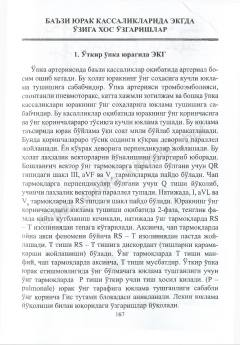

KETurli kasalliklarda EKG ko'rsatkichlarining o'zgarishi va ularni tahlil qilish bo'yicha qo'llanma.
Ushbu kitob turli yurak va tizimli kasalliklar, jumladan o'pka yuragi, perikardit, miokardit va elektrolitlar almashinuvi buzilishlarida EKGda kuzatiladigan o'zgarishlarni tahlil qiladi. Unda patologik holatlarni elektrokardiografik belgilari va ularni differensial tashxislash usullari yoritilgan.